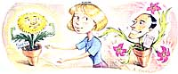

Last Laugh
You may be married to a couch potato after all.
Gardens and marriage have more in common than most people realize. They are both an affirmation of life, a symbol of faith in the future, a commitment to love and support. Both gardens and marriages are full of surprises and give great pleasure, but neither flourishes under stress.
On the other hand, you always know where your plants are, and if you get tired of them, it's easy to throw them out and start over.
A garden center full of colorful aromatic flowers can be as seductive as a candlelight dinner. Be careful - while they may be beautiful in bloom, many flowers last for only a few weeks each year. They spend the rest of the time lounging around, littering, and making constant demands for food and drink. They may even attract parasites.
Successful gardeners don't throw themselves at every flashy plant that shows up at the local nursery. They have learned not to take chances with strangers. Before they bring them home, they check them out. So should you.
Ask a friend who gardens, or find out from back issues of MOTHER.
1. Where does the plant come from? If it's new in town, beware. Exotic immi grants tend to need special diets. And worse, they're often susceptible to diseases and pests that don't bother local plants.
2. What kind of reputation does it have? Does it, like mint, bully its way through the garden? Like most roses, does it show off for a few weeks and become a deadbeat the rest of the year? Will it help support itself, either by attracting beneficial insects, providing shade, or satisfying your sense of taster, smell, sight, or touch?
3. How much attention does it need While it's true that the most beautiful gardens are often the easiest to care for, and the easiest to care for are often the most beautiful, au gardens need to be weeded, and most need to be watered and fed natural whole foods like compost, manure, and leaves, at least occasionally. Plants that are left to fend entirely for themselves end up looking bedraggled and listless, and eventually all but the most faithful will leave you.
Take another look at the plants in your friends' and neighbors' gardens, around buildings and along highways, and the ones that fill your local nursery or garden center. They may not seem very exciting, but they're the ones you can count on. There's a lot to be said for something that will stick around through good times and bad, for better and for worse.
If your garden is in full sun, in a dry corner of the yard, look for succulents like aloes and sedums, which have thick, water-retaining leaves. Mediterranean plants and herbs, like lavender, rosemary, and thyme, which usually have long, narrow, or needle like leaves, also do well. Annuals like cosmos and marigolds adapt and multiply for generations.
A shady garden usually does best with lily of the Nile, pansies, ivies, impatiens, or ferns.
The garden that gets four to six hours of sun a day and water twice a week has the horticultural equivalent of good looks and brains. This is the best place for fruit and vegetables.
Should I take a chance on a good-looking stranger? Of course. All gardeners learn by vial and error. There's always room in a garden for mistakes, and gardens - unlike spouses - will forgive almost anything.
|
 AMY YOUNG |
|
|